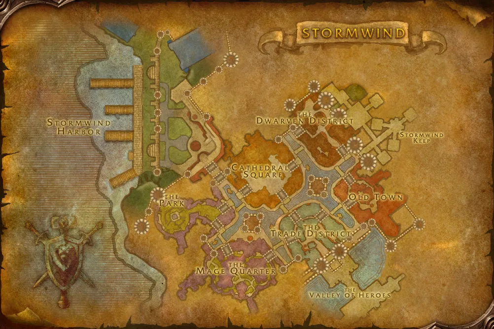

Accès
 Entrée Hurlevent 52.4, 70.0
Entrée Hurlevent 52.4, 70.0 5 joueurs · niveaux 25 à 29
5 joueurs · niveaux 25 à 29 6 quêtes · 1 boss
6 quêtes · 1 boss
Le point rouge marque l'entrée du donjon.
Toutes les zones sont sur notre carte interactive.
La prison de Hurlevent, où les détenus défias se sont révoltés.
📅 Mise à jour le 4 novembre 2026🛠 Patch 1.60.1.70755

Entrée Hurlevent 52.4, 70.0 5 joueurs · niveaux 25 à 29 6 quêtes · 1 bossLe point rouge marque l'entrée du donjon.
Toutes les zones sont sur notre carte interactive.
| Objet | Type |
|---|---|
| Fer de prisonnier | Une main |
| Coup de poing en fer | Une main |
| Menottes forcées | Poignets |
Butin d'après les données de WoW Classic : Forever a ajouté de nouveaux objets dans les donjons, la liste sera complétée en jeu. Seuls les objets de qualité inhabituelle et mieux sont listés. Passe la souris sur un objet pour voir ses caractéristiques (info-bulle Wowhead), ou clique pour ouvrir sa fiche.
Donnée par : Garde Berton (Les Carmines)
Récompense : Bâton de racine durcie · Epée longue Lucine
Donnée par : Conseiller Millstipe (Bois de la Pénombre)
Récompense : Bottes de l'Ambassadeur · Jambières en mailles de Darkshire
Donnée par : Nikova Raskol (Hurlevent)
Donnée par : Gardien Thelwater (Hurlevent)
Donnée par : Motley Garmason (Les Paluns)
Récompense : Brise-crâne · Ceinture de justification
Donnée par : Gardien Thelwater (Hurlevent)
Noms des quêtes, des PNJ et des objets d'après les données du jeu (Polestar, CC BY 4.0, et Factoruide/Questie).